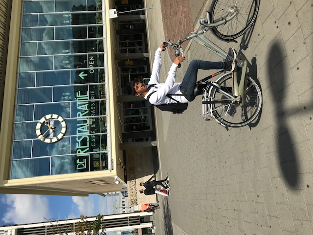

Bram Nieuwland
Software Developer
Who am I?
Hi, I'm Bram Nieuwland and I am currently 17 years old and I'm following a study on Sint Lucas. This is my portfolio and here I will show you a few of my creations I made for my subjects. I think that I have so far done a great job with collecting projcets to show here on my website.